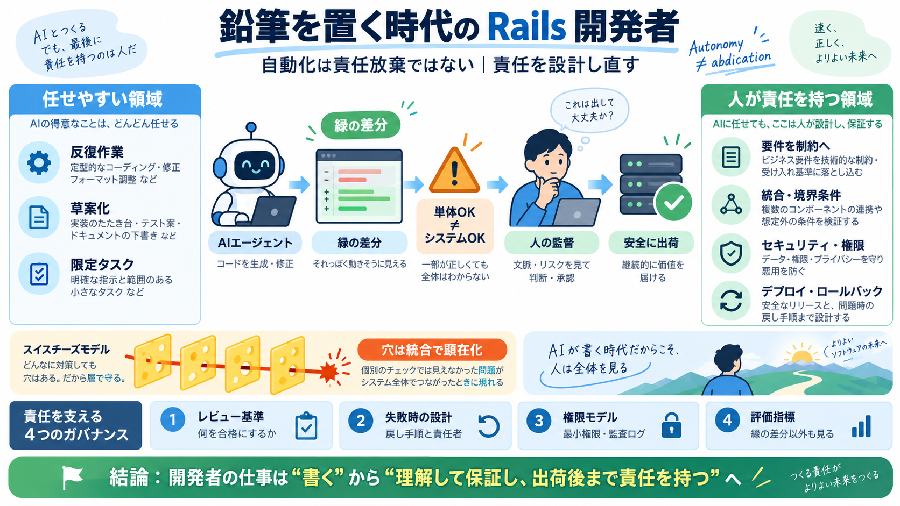

Rails World 2026 Opening Keynote - DHH
# Rails World 2026 Opening Keynote - DHH ## Channel: Ruby on Rails 24.2K subscribers 444 likes ### Description 7,150 vi…

# Rails World 2026 Opening Keynote - DHH ## Channel: Ruby on Rails 24.2K subscribers 444 likes ### Description 7,150 vi…
News › Pencils down: DHH declares the end of hand-written code Rails World 2026 opening keynote # Pencils down: DHH de…
Join Ruby creator Yukihiro "Matz" Matsumoto and Rails creator David Heinemeier Hansson for a conversation on the future …
| | | | | --- | | | an0malous 8 hours ago | prev (javascript:void(0)) This keynote is from David Heinemeier Ha…
That cognitive dependency is a risk DHH takes seriously. He compared it to the debate over whether calculators should re…